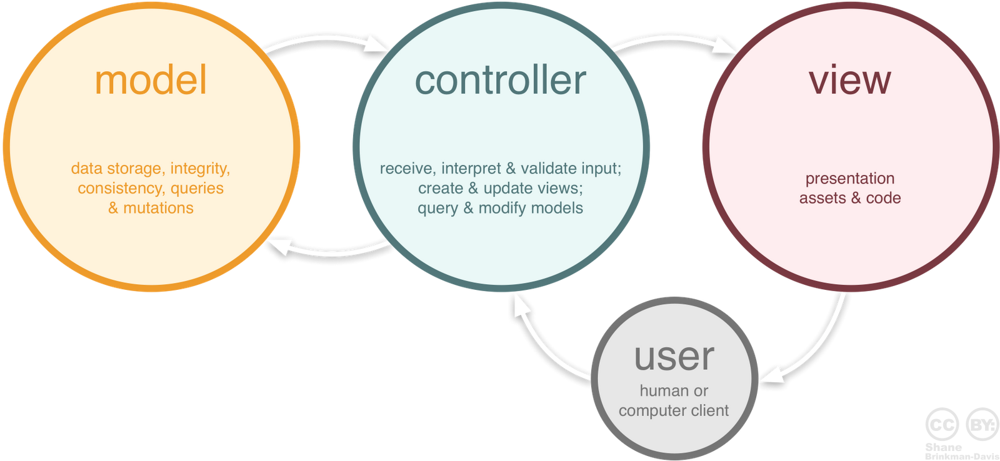

The superheroic MVW Framework
Presentation by Jeroen Berndsen
Hello There!
Topics
- History of the web and ASP.NET
- AngularJS
- .NET integration
- The future, today!
A short history lesson
Users request and consume static information (1990)
The world wide web is invented
Simple HTML, some CSS
JavaScript became standardized in 1996
Web 2.0: Users start producing information (2002)
ASP.NET introduced
User Controls
Code-behind files
remember page life cycles?The iPhone: transition to mobile-first (2007)
.NET 3.0 introduced in late 2006
WPF, WCF, WWF, Windows Cardspace
.NET 3.5 late 2007, introducing LINQ and EF
Cloud based reactive systems and big data (2010 - now)
.NET 4.0 introduced in 2010
ASP.NET MVC
Parallel LINQ, Task Parallel Library
Cloud architecture patterns: CQRS, Event sourcing, etc.
What about front-end technologies?
HTML is intended for static documents
Current web apps are highly dynamic
Webdev = tricking the browser into doing what we really want?
DOM manipulation libraries (jQuery)
This is madness!
we are WAY too dependent on our web apps
And we know how to do better
Adapt design patterns and principles to front-end
Decouple the front-end and back-end
Decouple presentation from app logic
AngularJS
It brings quality
AngularJS
It's fast!
AngularJS
It's free!
AngularJS
Return the things to where they belong
Use HTML to declaratively describe UI
Use CSS for styling and animation
Use Javascript to add behaviour
AngularJS
The superheroic MVW Javascript framework
Extend HTML with reusable components
Abstract from DOM manipulation
Separate presentation from behaviour
Testing as a first-class citizen
Model View Control (MVC)
Data binding
Bind data to views
Hello {{name}}!
<div ng-app="app">
<h2>Data binding</h2>
<p>Hello {{name}}!</p>
<input type="text" ng-model="name">
</div>
Data binding
Templates, expressions, views, $compile
Total: {{price * quantity | currency}}
<div ng-app="app" ng-init="price=1;quantity=1;">
<h2>Data binding</h2>
<input type="text" ng-model="price"><br />
<input type="text" ng-model="quantity"><br />
<b>Total: </b>{{price * quantity | currency}}
</div>
Data binding

Image courtesy of the AngularJS team
Controllers
Add logic to views
Controllers
todo.js
var app = angular.module("app", []);
app.controller('TodoController', function ($scope) {
$scope.todos = [
{text:'learn angular', done:true},
{text:'build an angular app', done:false}];
$scope.addTodo = function() {
$scope.todos.push({text:$scope.todoText, done:false});
$scope.todoText = '';
};
$scope.remaining = function() {
var count = 0;
angular.forEach($scope.todos, function(todo) {
count += todo.done ? 0 : 1;
});
return count;
};
});
Controllers
index.html
<div ng-controller="TodoController">
<i>{{remaining()}} of {{todos.length}} remaining</i><br />
<div ng-repeat="todo in todos">
<input type="checkbox" ng-model="todo.done">
<span class="done-{{todo.done}}">{{todo.text}}</span>
</div>
<form ng-submit="addTodo()">
<input type="text" ng-model="todoText" size="15">
<input type="submit" value="add">
</form>
</div>
Controllers

Image courtesy of the AngularJS team
Services
Move view independent business logic to reusable modules
{{invoice.total(c) | currency:c}}
Services
index.html
<div ng-controller="InvoiceController as invoice">
<div>
Quantity: <input type="number" min="0" ng-model="invoice.qty">
</div>
<div>
Costs: <input type="number" min="0" ng-model="invoice.cost">
<select ng-model="invoice.inCurr">
<option ng-repeat="c in invoice.currencies">{{c}}</option>
</select>
</div>
<div>
<b>Total:</b><br />
<span ng-repeat="c in invoice.currencies">
{{invoice.total(c) | currency:c}}<br />
</span>
</div>
</div>
Services
controllers.js
app.controller('InvoiceController', function(currencyConverter) {
this.qty = 1;
this.cost = 2;
this.inCurr = 'EUR';
this.currencies = currencyConverter.currencies;
this.total = function total(outCurr) {
return currencyConverter.convert(this.qty * this.cost,
this.inCurr, outCurr);
};
});
Services
finance.js
angular.module('finance', []).factory('currencyConverter',
function() {
var currencies = ['USD', 'EUR', 'CNY'];
var usdToForeignRates = {
USD: 1,
EUR: 0.74,
CNY: 6.09
};
var convert = function (amount, inCurr, outCurr) {
return amount * (usdToForeignRates[outCurr] /
usdToForeignRates[inCurr]);
};
return {
currencies: currencies,
convert: convert
};
});

Image courtesy of the AngularJS team
Wiring up a back-end
Super simple with $http
angular.module('finance', [])
.factory('ibanService', function ($http, apiUrl) {
// return a promise because the http request will take a while
function convertBban (request) {
var promise = $http.post(apiUrl + '/Iban/ConvertIban', request)
.then(function(response) {
return response.data;
});
return promise;
};
// return the actual service
return {
convertBban: convertBban;
};
});
Custom directives
Build your own reusable components!
angular.module('app')
.directive('myCustomer', function () {
return {
restrict: 'E',
templateUrl: 'myCustomer.html'
}
});
<fieldset>
<legend>Personal details</legend>
<label>First name</label> {{customer.firstName}}
<label>Last name</label> {{customer.lastName}}
</fieldset>
Custom directives
angular.module('app')
.controller('SomeController', function($scope) {
$scope.customer = {
firstName: "Jeroen",
lastName: "Berndsen"
};
});
<div ng-controller=“SomeController”>
<my-customer>
</div>
Routing
Build full-fledged SPAs!
angular.module('app', [])
.config(function ($routeProvider) {
$routeProvider
.when('/home', { templateUrl: 'home.html',
controller: 'HomeController' })
.when('/about', { templateUrl: 'about.html',
controller: 'AboutController' })
.otherwise( redirectTo: '/home' );
});
Eco-system and tooling
Angular has lots of friends!
The community
Quite possibly the best part of it all

JavaScript runtime environment
Comes with the package manager NPM
Full integration with Visual Studio in vNext
Get it at www.nodejs.org
Grunt / Gulp
Because who likes doing mundane work?
The Javascript task runner
In one word: automation
Minification, compilation, unit testing, linting, etc.
> npm install -g grunt

Yeoman and Bower
Scaffolding tool for modern web apps
Kickstart your project using generators
Scaffold boilerplate code, grunt tasks and bower dependencies
Use Bower for in-project dependencies
> npm install -g yo


Jasmine, Karma and Protractor
Testing is important! You should do it!
Jasmine is a behavior-driven test framework
Karma automates running the test suites in all browsers
Protractor offers full E2E testing for your angular apps
.NET integration
It's easy!
It is not the strongest or the most intelligent who will survive but those who can best manage change. --Charles Darwin
Start small
Integrate in sections of your current project
Just add a reference to angular.min.js
Add client-side form validation
Smooth transitions, filtering, sorting, etc.
Client-side routing
Adapt
Wire up a back-end
1: Map the UI router to MVC routes
2: Migrate to REST using Web API
Embrace
Full separation between client and server
Component segegration (e.g. Authorization servers / microservices)
Decouple from IIS (OWIN is default in vNext)
Switch to cloud hosting on Azure (Worker roles)
Conquer
Scale out! You really rock now!
Reactive event-driven systems
High performance, high availability, high everything
Enterprise scale big data
Web Sockets (SignalR)
The future, today!
Let me inspire you
The Ionic Framework (1)
The Ionic Framework (2)
Material Design
Thank you!
Find this presentation at http://presentations.jberndsen.nl/introduction-angular-for-dotnet/